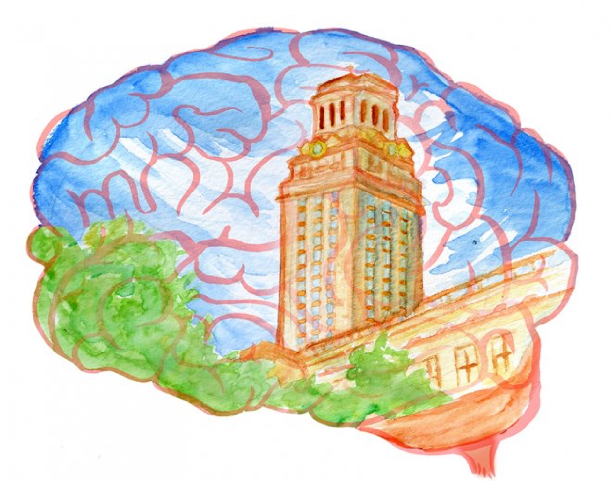

Smart, strong, talented and popular, the young Charles Whitman seemed, outwardly, like a poster child for the “all-American boy” stereotype. But as the sandy-haired boy grew up into a tall, athletic ex-Marine, beneath his mop of blond hair, something else was also growing. A brain tumor, nestled between his thalamus, hypothalamus and amygdala, developed quietly to the size of a pecan.
During his 25th year, Whitman began to complain of headaches, a severe, persistent pain that he later described as “tremendous.” He wrote increasingly troubled journal entries detailing his mental state: “Recently (I cannot recall when it started) I have been a victim of many unusual and irrational thoughts.” He paid a visit to the campus mental health center complaining of violent impulses.
Then, one sweltering August day in 1966, Whitman did something no one expected: He climbed to the top of the UT tower with a sawed-off shotgun, and began shooting. His 96-minute reign of terror killed 14 people on campus and injured 31 more, and only ended when he was killed by Austin police. Whitman’s suicide note requested an autopsy to examine his brain, because he was convinced it would show some “visible physical disorder.” The shooting — the deadliest college shooting until Virginia Tech in 2007 — left the nation in shock and clamoring for answers.
Although the initial autopsy was inconclusive about the role of the tumor in the shooting, a follow-up investigation by a group of scientists under a commission requested by governor John Connally showed it could have played a part in the events of that day.
“The highly malignant brain tumor conceivably could have contributed to his inability to control his emotions and actions,” wrote Stuart Brown, an assistant professor of psychiatry at Baylor College of Medicine, in the initial 1966 report.
But not all experts agree on whether the tumor affected Whitman’s thoughts and actions on that August day.
Michael Koenigs, an expert on brain lesions, said that the position of Whitman’s tumor — pressing against the amygdala — definitely had the potential to affect his mental state.
The amygdala is a region at the back of the brain involved in emotional regulation and regulation of responses such as fear and aggression. Koenigs said he has seen instances of tumors like Whitman’s which have affected patient’s’ entire personalities.
“It is unlikely that a tumor initiated some type of psychotic rage, but it could have tweaked his personality to be a bit more aggressive or a bit less empathetic,” Koenigs said. “It could certainly affect his emotional state, and it could certainly affect his body’s physiological responses to threat and healthy emotional responses related to aggression.”
Other scientists, like N. Bradley Keele, an associate professor at Baylor College of Medicine, takes a more skeptical point of view. Keele, who studies the amygdala, said that although the location of the tumor could have affected Whitman’s behavior, it is unlikely that it was the sole reason for his actions or even an important contributing factor.
“Yes, he had an aggressive, malignant tumor in his temporal lobe that could have impacted his bizarre and violent behavior,” Keele said. “However, what is often overlooked is that he came from a very abusive home, and admitted to domestic violence with his own wife prior to stabbing her. I suspect his tumor was little more than ‘circumstantial.’”
This view is shared by Gary Lavergne, author of the 1997 book “A Sniper in the Tower.”
“For 48 hours, [Whitman] made serial decisions in a correct order leading to the accomplishment of a goal,” Lavergne said. “To me his actions speak for themselves. If indeed a tumor or anything else took control of him and made him do something he didn’t want to do, when did this ‘seizure’ of sorts start?”
Lavergne hypothesized that Whitman’s violence was largely due to discontent with his situation and resentment towards his family, and after further research, said he even doubts the existence of the tumor.
“After my book came out, I met two doctors who didn’t believe he had a brain tumor at all,” Lavergne said.
Today’s sophisticated brain imaging technology could allow a more accurate look into Whitman’s brain, but Whitman’s brain has been reported by some media outlets as being among the “missing” brains that UT employees disposed of in 2002.
Even if it were possible to pinpoint the effects of the tumor of Whitman’s actions, the question would still remain whether or not the answer should change the public’s perception of him. If it were proven that the tumor was a cause, would Whitman himself be less to blame?
“What does it mean when somebody’s brain changes?” asked David Eagleman, a scientist who studies the intersection between neuroscience and law. “This really challenges us to think about criminality in a different way because you don’t choose your genetics, you don’t choose your childhood experiences, your family of origin, your neighborhood, you don’t choose any of this stuff — and yet this is the stuff, your genetics plus your experiences, that makes you who you are. None of us would choose to have a brain tumor.”
Eagleman said that although the tumor could have been partly responsible for Whitman’s actions, it would be unlikely to change the public’s perception of him.
“His crime was so horrific — he killed his wife and mother the night before and shot all these random strangers — I think society would not forgive him,” he said.
Eagleman runs the Center for Science and Law, a nonprofit dedicated to exploring the boundaries between biological causes of crimes and how those crimes are dealt with under the law.
“What stresses and strains us as people is knowing on the one hand that we are biological creatures, and knowing on the other hand that acts of violence like his are so deep and awful that they feel unforgivable,” he said. “We live in that tension.”